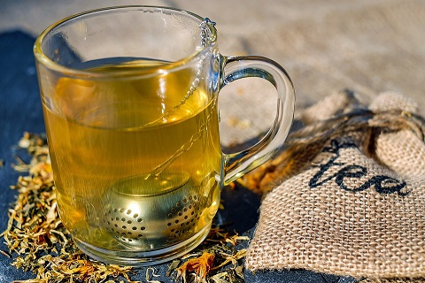

Herbal Tea's

People all over the world have been drinking tea for thousands of centuries, and for good reason. Numerous studies have shown that a variety of teas may boost your immune system, fight off inflammation, and even ward off cancer and heart disease.
more text...